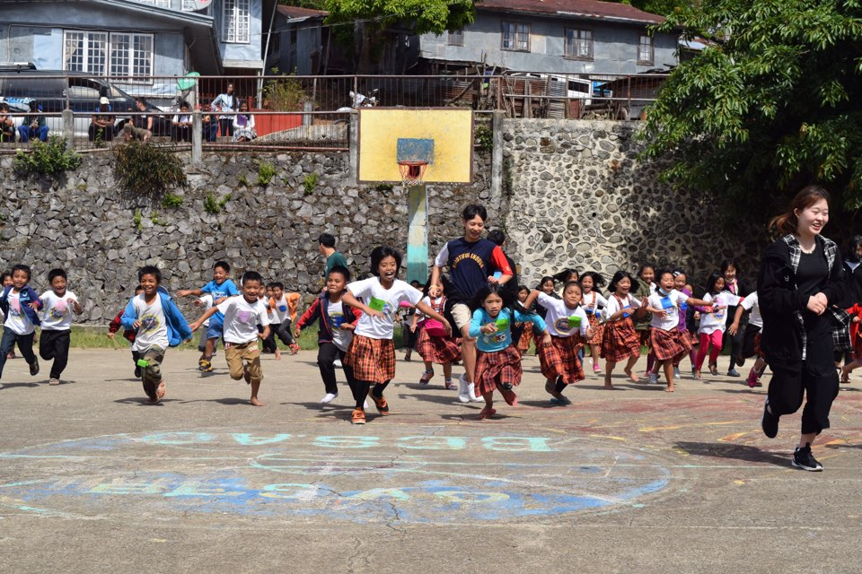

루트온 협동조합 (이하 루트온)은 기존 해외봉사프로그램을 경험한 대학생들이 대안적 해외교류프로그램을 기획 및 진행하여,그동안 제기되었던 해외봉사프로그램의 문제점과 한계성을 극복하고자 조직되 었습니다. 나아가 ‘사람을 통해 더 나은 지구를 만들어갑니다’란 가치 아래 해외교류프로젝트 및 공정여 행을 진행하고 있습니다.
대표적인 프로그램인 해외교류프로젝트는 참가자들이 다른 문화에 대한 공감 과 이해의 능력을 기르며, 삶에 자신감을 얻을 수 있습니다. 또한 현지에서 장기적 목표를 위한 방과 만 남 그리고 소통을 통해 함께 좀 더 나은 삶의 터전을 만들어 나갈 수 있습니다. 이를 통해 장기해외봉 사뿐만 아니라 국제개발협력 부분까지도 긍정적인 역할을 할 수 있기를 기대합니다.
